Aug 2025 · selected work
Hear how you look, see how you sound
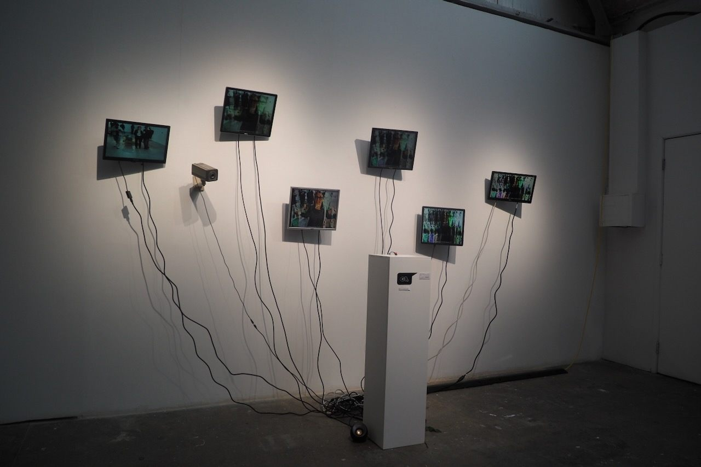
six LCD screens, button, Arduino, plinth
‘Hear how you look, see how you sound’ is a self-eroding portrait booth that turns every visitor’s image into sound, invites them to “play” that sound, then burns the edited audio back into the picture’s pixel data. Each cycle bruises the file a little more, leaving behind a corrupted photograph that audibly and visually catalogues the show’s slow decay. The piece literalises data’s tendency to drift, break and disappear once it leaves our hard drives and circulates in public space.
- Date
- Aug 2025
- Dimensions
- 400 × 60 × 300 cm
- Tags
- Installation, LCD, CCTV, Arduino
Copeland Gallery, BitRot - Phreaking Collective, August 2025
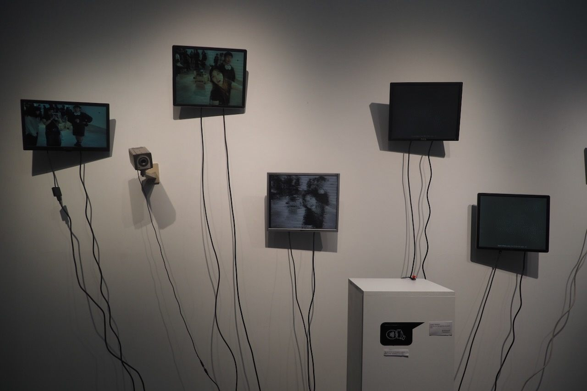
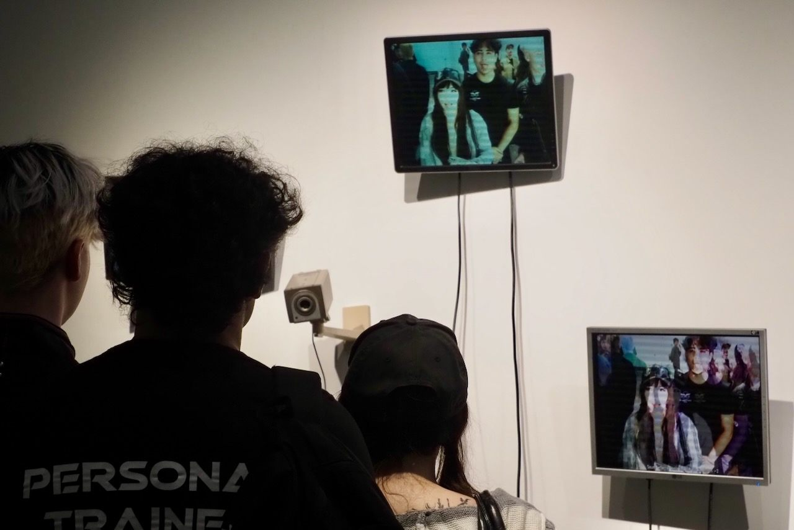
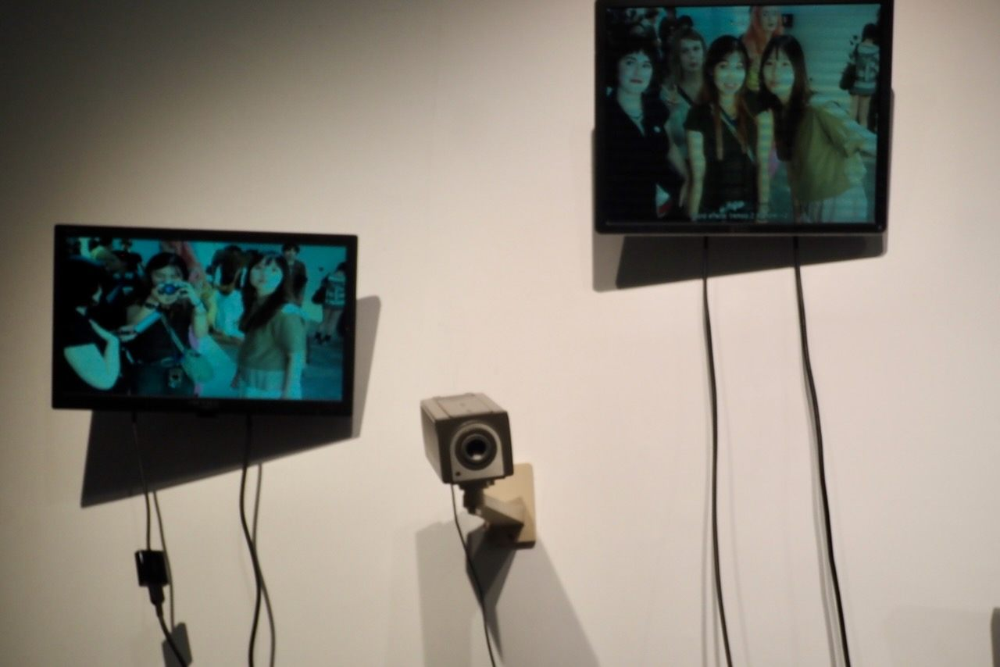
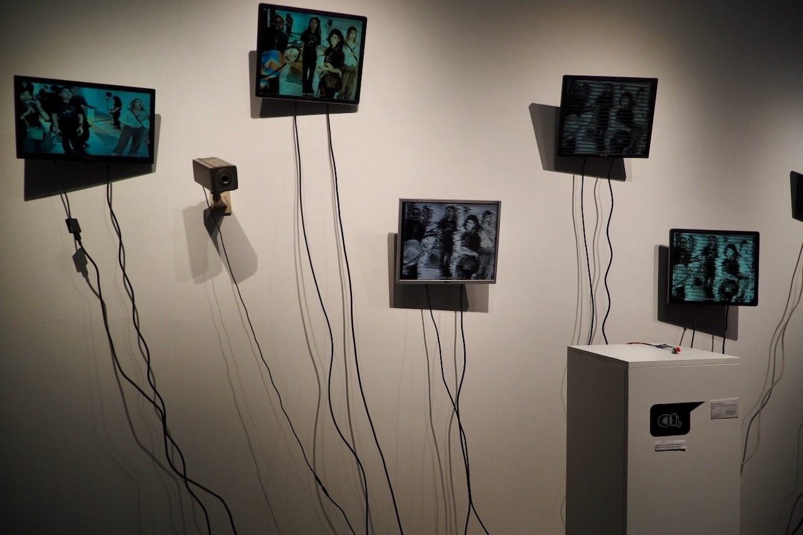
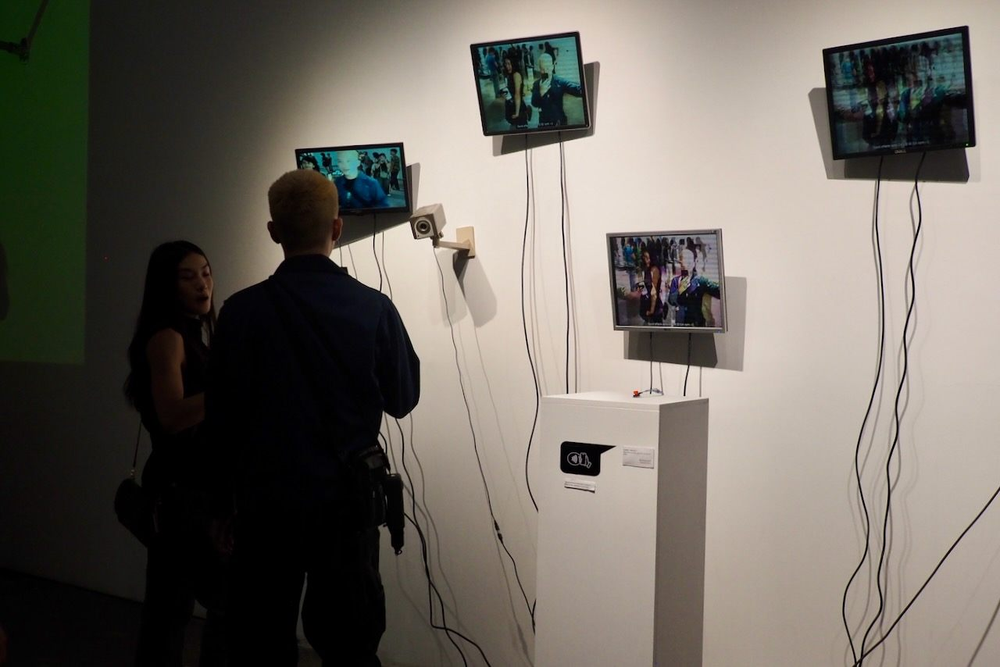
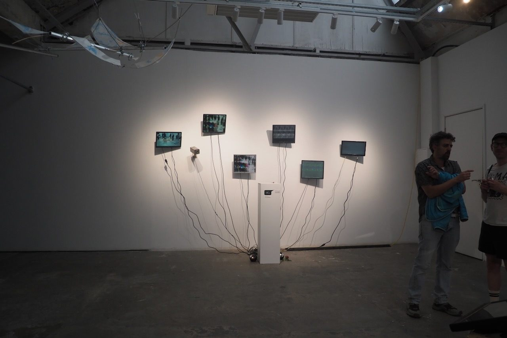
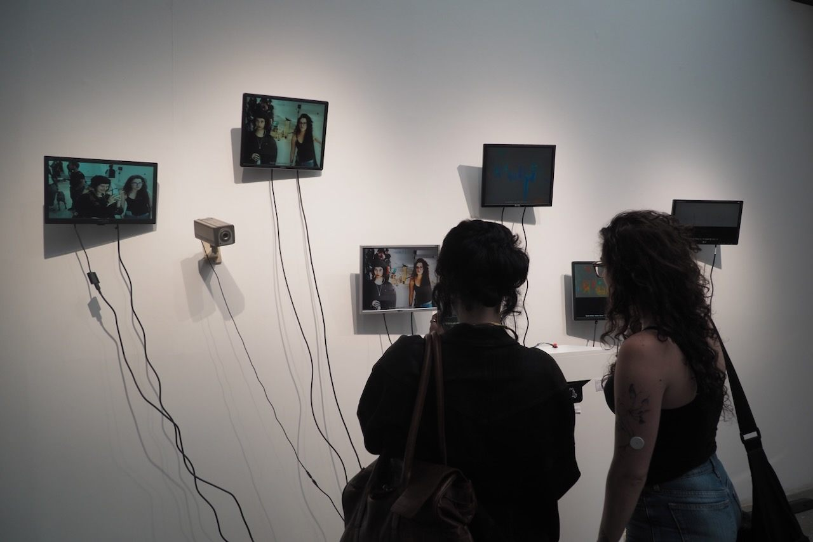
Pictures taken from audience interaction and a series of erosion from image to sound conversion
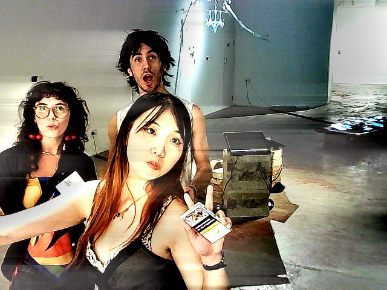
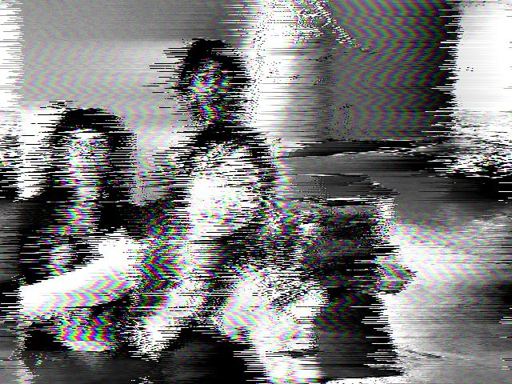
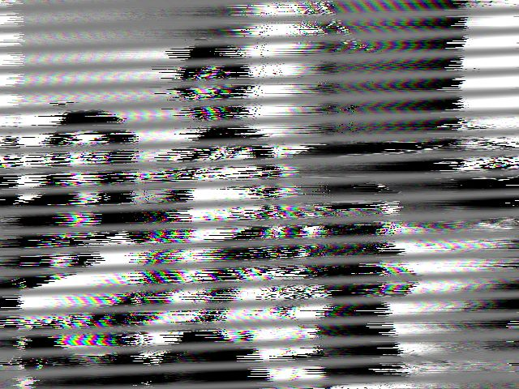
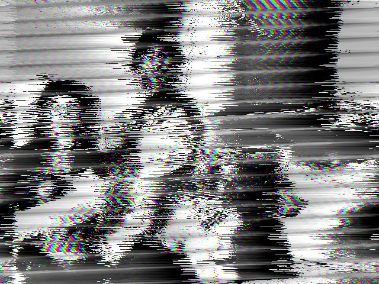
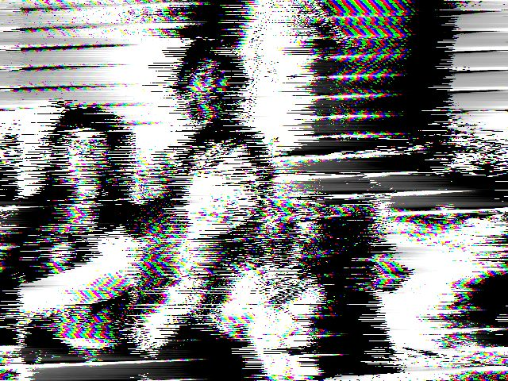
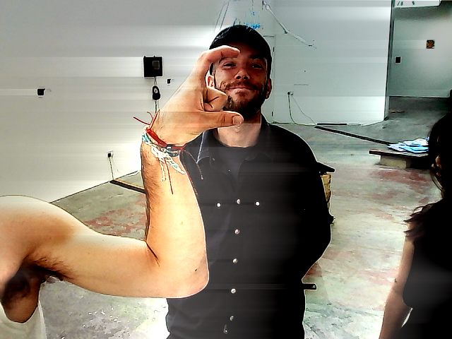
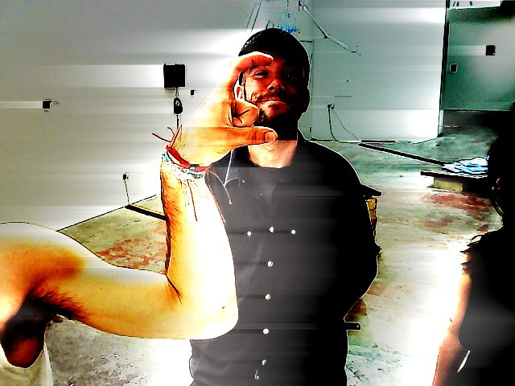
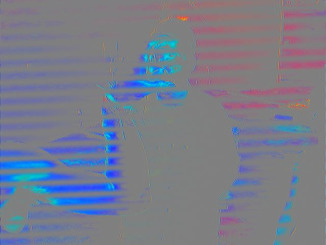
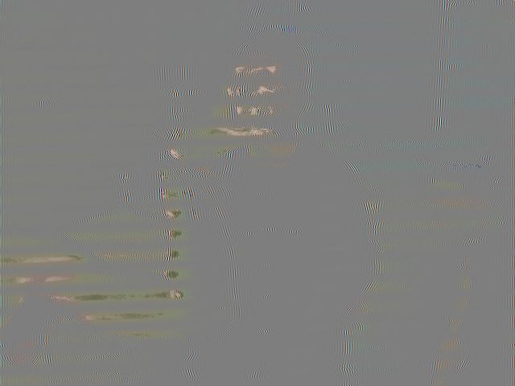
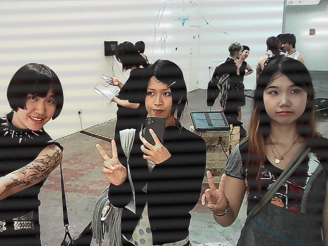
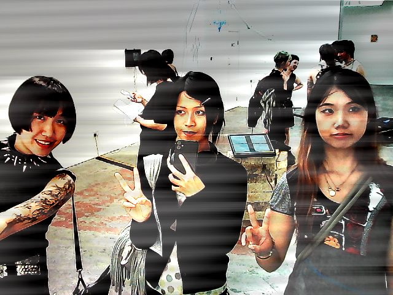
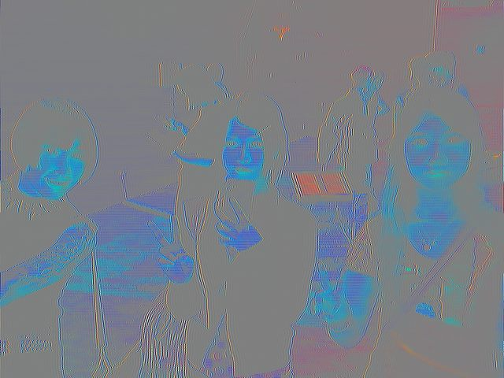
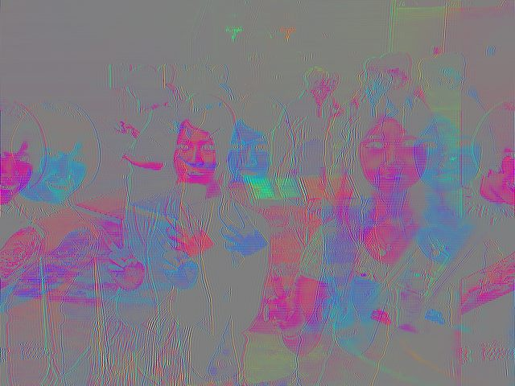
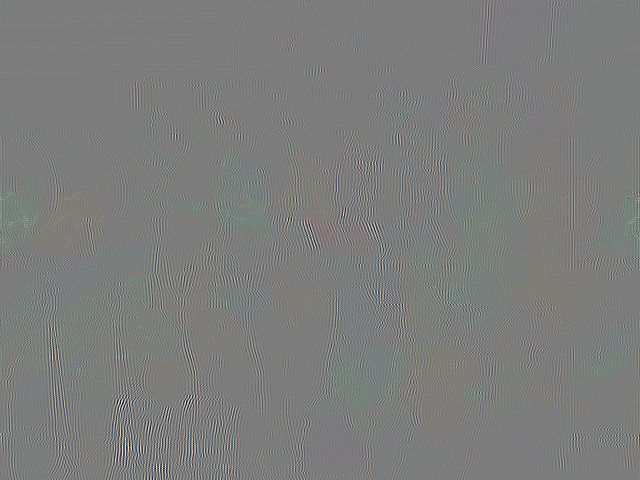